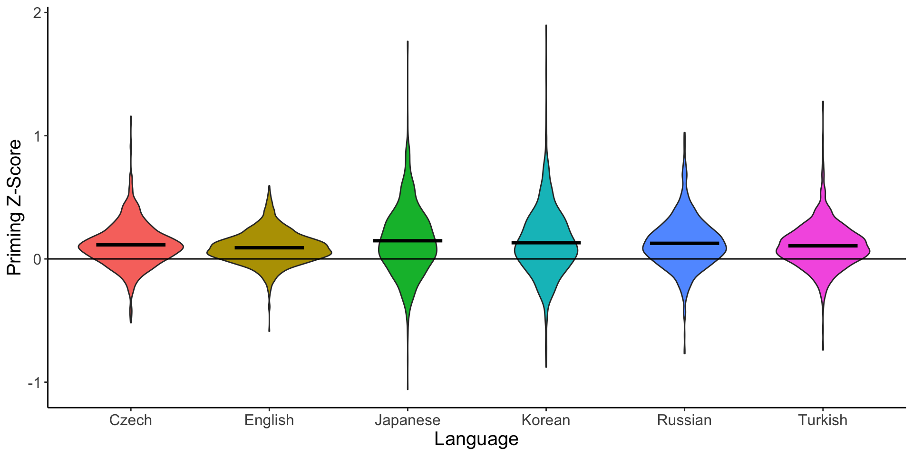
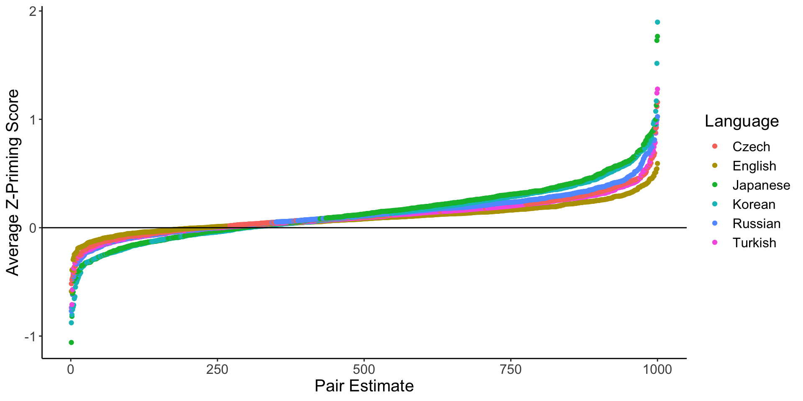

Big Team Science Means Big Method Opportunities
Erin M. Buchanan
Harrisburg University
Outline
- Big Team Science
- The Semantic Priming Across Many Languages (SPAML) Case Study
- Semantic Priming
- Stimuli
- Power
- Adaptive Sampling
- Procedure and Results
Big Team Science
- Collaboration = 2+ people working together
- Big team science = BIG collaborations
- 10 plus authors at 10 plus institutions*
- *we made this up
Big Team Science
- Two types:
- Individual projects: Open Science Collaboration, many others
- Organizations: Psychological Science Accelerator, Many Xs, NutNet, DRAGNet
Big Team Science
- Why BTS?
- The internet!
- Credibility revolution (“replication crisis” or “psychology’s renaissance”)
- WEIRD Science
BTS is Successful
- Entire subsections of journals devoted to replication reports (which often have big teams; AMPPS)
- PSA has five experimental/data publications, five+ registered reports ongoing
- Increasing interest and investment into these projects
- If you care about metrics, these are very much wow
BTS: What’s Next?
- BTS requires rethinking global methodology
- de-WEIRDing specific to this study
- Power (and correspondingly, analyses)
- Sampling
The PSA and SPAML
- The PSA is a CERN for psychological science
- Globally distributed network of researchers with more than 1000 members in 82 countries
- Open science principles and practices
- PSA007: Semantic Priming Across Many Languages

Semantic Priming
- Semantic priming has a rich history in cognitive psychology
- Semantic priming occurs when response latencies are facilitated (faster) for related word-pairs than unrelated word-pairs
- Usually measured with the lexical decision or naming task
- The Semantic Priming Project (Hutchison et al., 2013) provided priming values for 1661 English word-pairs
Semantic Priming
- Semantic priming replicates pretty well
- WEIRD words
- Single language focus or multilingual individuals
- A lack of data sets that are matched on language within one study
- How can we leverage the computational skills found in natural language processing with the open data publications to improve this research?
- Goals of of the SPAML:
- Assess semantic priming across (at least) 10 languages using matched stimuli
- Provide a large-scale data set for reuse in linguistics
- Registered Report at Nature Human Behaviour
Linguistics is WEIRD
The Stimuli
- How do you create stimuli for a priming study?
- Similarity: shared meaning between concepts
- Defined by face value DOG-CAT versus DOG-SPOON
- Number of shared features using feature production norms
- Association strength using free association norms
- Co-occurrence using computational models and text corpora
Text Corpora
- Where do you get large, open text corpora that are comparable for calculating similarity?
- The Open Subtitles Corpus provides linguistic data for 50+ languages
- Subtitles have shown to be critically useful datasets for word frequency calculation (New et al., 2007; Brysbaert & New, 2009; Keuleers et al., 2010; Cuetos et al., 2012; Van Heuven et al., 2014; Mandera et al., 2015; and more)
- The corpora are freely available to download for use in linguistic projects
- Approximately 43 languages contain enough data to be usable for these projects
Selection Procedure
- First, we decided to select nouns, verbs, adjectives, and adverbs for potential inclusion in the study
- Therefore, we needed to be able to use part of speech tagging on our potential languages
udpipeis a language package in R that provides part of speech tagging in many languages
Selection Procedure
- Each language corpus with an available
udpipemodel was examined for corpus size and the Wikipedia corpus for that language was added to small corpus languages (Afrikaans, Hindi, Armenian, Tamil, Urdu) - All stop words and numbers were removed
- All words with less than three characters were removed
- The words were filtered for nouns, verbs, adjectives, and adverbs
- Using word frequency, the top 10,000 words in each language were selected
Similarity Calculation
- Similarity was calculated by using a FastText model based on the language subtitles and/or Wikipedia combination
- The subs2vec project was used for initial calculations (van Paridon & Thompson, 2021)
- Cosine is a distance measure of vector similarity, similar to correlation
- Top five cosine values for each word were calculated from the FastText model
Cross Referencing
- We then used translation to convert each language’s stimuli back to English
- These data were merged together to create a dataset of possible stimuli across all languages
- 1208416 number of pairs were found across languages with an average overlap of 3.23% (2.70 to 70.27)
- The pairs were sorted by language overlap to final selection
Cross Referencing
- The overlap between languages is still difficult:
- Mean overlap: 28%
- Average words for translation: 710
Final Related Pairs
- 1000 pairs were selected:
- Each word was only used once
- Words were not different forms of the same word (RUNNING - RUN)
- Limit use of proper names
- Important: driven by the language, not English translation
- Unrelated pairs are created by scrambling the related pairs
Nonwords and Translators
- Nonwords are generated with a Wuggy-like algorithm (Keuleers & Brysbaert, 2010)
- Translators check all pairs for proper translation, form, and meaning
- They suggest the appropriate words for retaining meaning between cue-target
- They fix nonwords to ensure they are pronounceable, not too fake
- Dialects are considered and separated when appropriate
Powering the Study
Now that we have the stimuli, how do we power this?
Decisions on sample size planning usually driven by:
- Research design
- Choice of hypothesis test
- Effect size estimation
What can you do when you do not have these?
Moving Beyond N = 30
- Long standing traditional to use controlled stimuli in the cognitive sciences
- Recent increase in publication of linguistic norms has lead to the availability of these norms for many variables
- Issues of power and sample size have been largely ignored for norming data collection
- Power can be difficult for complex cognitive designs with many items
AIPE
AIPE: Accuracy in Parameter Estimation
Focus shifts from p-values to confidence intervals that are “sufficiently narrow”
Multistep procedure:
- Define a minimum acceptable sample size
- Define a stopping rule
- Define a maximum sample size
Kelley, 2007; Kelley, Darku, & Chattopadhyay, 2018; Maxwell, Kelley, & Rausch, 2008
Example: Response Latencies
- The English Lexicon Project: lexical decision and naming response latencies for over 40,000 words
- Data provides a good metric for base response latencies for words
- Control for participant variability in base response latency by first standardizing participant responses within data collection sessions (Faust, Balota, Spieler, Ferraro, 1999)
Trial Type Accuracy RT Stimulus Participant ZScore
3 3 1 1 526 philosophical participant1 -1.0256075
5 5 1 1 512 belonging participant1 -1.1129066
6 6 1 1 626 lowliest participant1 -0.4020424
8 8 1 1 846 yacht participant1 0.9698008
9 9 1 1 434 warmish participant1 -1.5992874
10 10 1 1 552 splendor participant1 -0.8634806Example: Response Latencies
Define a stopping rule
- What should a sufficiently narrow confidence interval be?
- Accurately estimate which parameter? (effect size, response latency)
Example: Response Latencies
- What is the average standard error for our standardized response latencies?
Example: Response Latencies
- If I assume these data to be representative, what actual sample size might approximate SE = 0.16?
- Simulation of 100 randomly sampled words with sample sizes ranging from 5 to 200.
Example: Response Latencies
What sample sizes should we use?
- 80% below SE: N = 25
- 90% below SE: N = 35
- 95% below SE: N = 50
Define a minimum acceptable sample size: N = 50
In our study, we used the Semantic Priming Project data to define a maximum sample size based on priming scores (N = 320)
How to Run the Study
- Pre-register your plans!
- Collect data for minimum sample size
- Estimate the confidence interval for the items presented
- If confidence interval meets criteria, stop data collection
- If confidence interval does not meet criteria, continue collection
- Continue to repeat until criteria or maximum sample size reached
Adaptive Algorithms for Sampling
- We want to create a large dataset
- But participant attention is a finite resource
- So, we can create a large set of stimuli and sample
- But should all stimuli have the same sample size?
Item Variability
- Items are considerably variable … and current sample sizes may not tell us true population scores
- This data is only in English

Stimulus Sampling
- We have selected 1000 stimuli, only show each participant a smaller portion of stimuli
- At the start of the study, all stimuli have equal probability of being selected
- After each participant, sample size for each stimulus is calculated
- Once the stimulus has achieved the minimum sample size, calculate standard error
- Continue sampling until the item either achieves the goal standard error or maximum sample size
- Set the probability of selection for that stimulus to floor
- Continue sampling until complete with all stimuli
Study Flow

Procedure
- View a simple version: https://psa007.psysciacc.org/
- Overall task:
- A single stream lexical decision task
- All words cue-target are judged, cue-target linked by order
- Trials are formatted as:
- A fixation cross (+) for 500 ms
- CUE or TARGET in Serif font
- Lexical decision response (word, nonsense word)
- Keyboards are WILD
- 400 pairs = 800 trials
Data Provided
- The data will be provided in several forms:
- Subject/trial level: for every participant
- Item level: for each individual item, rather than just cue or just concept
- Priming level: for each related pair compared to the unrelated pair
Current Data Collection
https://psa007shiny.psysciacc.org/tracker/
*Big thanks to ZPID and Harrisburg U
Priming Distribution Results

Priming Comparison
Item Priming Results

Cross Cultural Comparison
Cross Cultural Comparison
Final Thoughts
- This work to diversify participants, languages, and researchers represented is aided by big team science approaches and methodology
- Priming effects are found across different writing systems
- Variability between languages appears to be approximately .02
- More languages currently underway
Recruitment and any Questions?
- Thank you for listening!
- We want you - join our team for data collection by contacting me
- All levels of researchers welcome
- Authorship is provided for those who meet the collaboration agreement
- All PSA collaborators are listed with their author information online